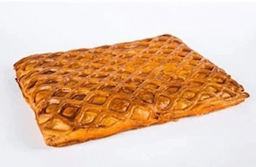

HORNAZO
Preparación: · Reposo: · Horneado: · Total:

Ingredientes
Para la masa
- 500 g de harina de fuerza
- 25 g de levadura fresca
- 200 ml de agua tibia
- 100 ml de aceite de oliva
- 1 huevo
- 1 cdita de sal
- 1 cdita de pimentón dulce
Para el relleno
- 150 g de chorizo en rodajas
- 150 g de lomo adobado
- 150 g de jamón serrano
- 1 huevo batido (para pintar)
Elaboración
- Disuelve la levadura en el agua tibia. Mezcla harina, sal y pimentón; añade agua con levadura, huevo y aceite. Amasa 10 min y reposa 1 h.
- Divide la masa en dos, estira la base y coloca jamón, lomo y chorizo.
- Cubre con la otra masa, sella bordes, haz cortes y pinta con huevo.
- Hornea a 180 °C durante 35–40 min hasta dorar. Deja templar antes de cortar.
Consejos
- Marca ligeramente el chorizo y el lomo para un sabor más intenso.
- Puedes aromatizar la masa con anís en grano o pimentón.